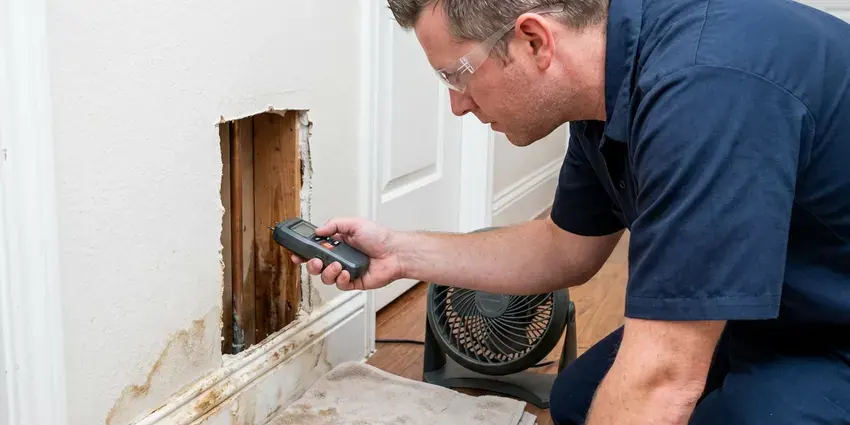

Slab Leak Detection in West Valley City, UT
Warm spot on the floor or a meter that never stops in West Valley City, UT? BPK Plumbing pinpoints leaks under your slab without tearing up the whole floor.
- Same-Day Slab Leak Testing
- Experienced Plumbers
- Expert Plumbers
- Accurate Leak Detection

Get Accurate Slab Leak Detection From Local Specialists in West Valley City, UT.
Call now and we will confirm whether you have a slab leak and precisely where it is.
Reliable Slab Leak Detection Services in West Valley City, UT
When water lines or drain pipes under your foundation develop leaks, BPK Plumbing is your reliable partner for professional slab leak detection in West Valley City, UT. We diagnose the problem efficiently, offering clear solutions to protect your home's structural integrity.
Our expertise includes:
- Acoustic listening equipment for precise leak pinpointing.
- Electronic leak detection for accurate pinpointing
- Acoustic ground microphones to pinpoint leaks within inches

Additional Plumbing Maintenance Services in West Valley City, UT
Our maintenance and specialty plumbing services in West Valley City, UT protect your home year-round and extend the life of every system.


Customers
Why Choose BPK Plumbing for Slab Leak Detection in West Valley City, UT?
A slab leak can waste thousands of gallons, crack tile, warp wood floors and weaken the soil under your foundation. Finding it accurately is the first step to a repair that does not tear up your whole house.
- Property Value, Undetected and unrepaired slab leaks can seriously diminish your home's value and make it difficult to sell in the future.
- Insurance Ready, We document findings with photos and readings for your insurance claim.
- Latest Tech, We invest in modern leak detection equipment, including acoustic sensors and ground penetrating radar, for better accuracy.
Citywide Coverage
Whether your home sits on a post-tension slab in a newer West Valley City community or a conventional slab in an older area, we can locate the leak. We schedule promptly because slab leaks get worse over time.
Experienced Team
The BPK Plumbing team undergoes ongoing training in leak detection techniques. We bring years of practical knowledge to every job, delivering an accurate diagnosis for your slab leak.
Safety-First Approach
Safety is paramount for every slab leak detection project. We adhere strictly to all local West Valley City, UT plumbing codes and safety regulations to protect your home and our technicians.
Trusted Certified West Valley City Plumbing Services Professionals
At BPK Plumbing, we take pride in providing certified plumbing services throughout West Valley City, UT. Backed by recognized industry credentials, our experienced plumbers combine technical skill with genuine customer care. Whether it is repair, installation, or maintenance, we follow strict safety and quality standards to deliver lasting results you can trust.
Call Us Now PHCC Plumbing Contractor Recognition
PHCC Plumbing Contractor Recognition Better Business Bureau (BBB) Accreditation
Better Business Bureau (BBB) Accreditation Angi Certified Pro
Angi Certified Pro ISO 9001 Quality Management Certification
ISO 9001 Quality Management CertificationAccurate Slab Leak Detection Services in West Valley City, UT
Emergency Slab Leak Detection in West Valley City
A sudden drop in water pressure, visible dampness or the sound of running water can signal an emergency slab leak. BPK Plumbing offers emergency detection services in West Valley City to address urgent situations quickly. We focus on rapid response to limit water damage and prevent further structural compromise to your property.

Video Pipe Inspection for Sewer Leaks in West Valley City, UT
Sewer line issues under a slab can also look like slab leak symptoms. We use high-resolution video cameras to inspect the interior of your drain lines, identifying cracks, blockages or separations. This is important if the issue isn't a pressurized water line, helping us determine if a sewer line repair is needed instead for your West Valley City home.
Emergency Slab Leak Response in West Valley City
A slab leak that is flooding floors or causing water to bubble up through tile needs quick attention. We respond quickly, help you shut off the water and isolate the leaking side if possible. That often lets you keep partial water service until the repair. Then we locate and fix the leak.
Electronic Acoustic Leak Detection in West Valley City
Our team uses electronic listening devices to pinpoint the exact location of a slab leak. These highly sensitive microphones can detect the faint sound of water escaping from a pressurized pipe under your foundation. This non-invasive method helps us avoid unnecessary concrete breaking, saving you time and money on repairs. It's especially effective for copper and PEX lines commonly found in West Valley City homes.
Slab Leak Repair Through Direct Access in West Valley City, UT
When a single leak is found on otherwise healthy pipe, direct access can be the most economical repair. We cut a small opening in the floor at the marked spot, repair the pipe and pressure test it. Then we patch the concrete and leave the area ready for flooring. Accurate detection keeps that opening as small as it can be.
Commercial Slab Leak Detection in West Valley City, UT
Commercial properties in West Valley City, UT also face the risk of slab leaks, which can disrupt business operations and lead to serious structural damage. BPK Plumbing offers specialized detection services for businesses, using the same technology to minimize downtime. We work quickly to locate leaks in offices, retail spaces and other commercial buildings.
Slab Leak Reroutes in West Valley City
Rerouting abandons the leaking line under the slab and runs new pipe through the walls or attic. It avoids breaking concrete and often costs less than direct access under finished floors. We typically use PEX for reroutes because it handles heat and resists hard-water corrosion. This option is popular when the slab is covered in tile or hardwood.

Pressure Testing & Isolation in West Valley City
When a leak is suspected, we can perform pressure tests on individual water lines. By isolating sections of your plumbing system and monitoring pressure gauges, we can confirm the presence of a leak and often determine which specific line is compromised. This systematic approach is crucial for homes with complex plumbing layouts, giving you an accurate diagnosis before any excavation in West Valley City, UT.
Slab Leak Detection Near Me in West Valley City, UT
When you search for "slab leak detection near me" in West Valley City, UT, BPK Plumbing is your local, trusted expert. We are deeply familiar with the plumbing infrastructure and common issues affecting homes in this area, including those caused by climate and soil conditions. Our proximity allows for quick response times and personalized service.
We know the slab types and plumbing materials used in homes built across different decades around West Valley City. That background helps us locate leaks more quickly and recommend the right repair. Local service also means simple follow-up if anything comes up later.
BPK Plumbing at a Glance
- Fully licensed plumbing team covering West Valley City, UT
- Same-day appointments and 24/7 emergency response
- Clear written estimates, no hidden fees
- 4.8-star rated by 470+ Utah customers
West Valley City Map
West Valley City Information
- Population
- 134,470
- Area codes
- 801/385/435
- Service area
- West Valley City and communities within 40 miles
- Nearby
- Taylorsville, West Jordan, Murray, Salt Lake City
Slab leak detection matters for homes in West Valley City, UT because soil movement can stress underground pipes, leading to leaks that can undermine foundations if not quickly addressed.
Expert Services
Trust our professionals for reliable BPK Plumbing solutions in West Valley City, UT.
Our Specialized Plumbing Services in West Valley City, UT
At BPK Plumbing, we provide a complete range of plumbing services across West Valley City, UT. From leak detection to full system installations, our team ensures fast, precise, and affordable service for both residential and commercial properties. Explore our core services below:


How Our Slab Leak Detection Service Works in West Valley City, UT
Test, trace, pinpoint and repair is the routine that keeps your slab leak repair small and accurate.
Request a Quote
Call (385) 543-4073 and describe what you have noticed, such as warm floors or a running meter. We schedule a visit and go over the detection fee.
Isolate and Locate
We pressure test hot and cold lines to confirm which side is leaking. Then we trace the pipe and listen through the slab to locate the leak.
Repair Options
We mark the leak and explain direct access, reroute and repipe options with prices. Once you choose, we schedule the repair and pressure test the finished work.
Frequently Asked Questions About Slab Leak Detection in West Valley City
The cost of slab leak detection in West Valley City, UT usually ranges from $250 to $700, depending on the complexity of the leak and the time required for detection. This cost covers the professional equipment and expertise needed to accurately locate the leak, which is crucial before any repair work can begin.
Yes. Our slab leak repairs and reroutes carry a written workmanship warranty, and PEX systems from brands like Uponor include long manufacturer warranties. We explain the coverage before you approve the work. That gives you peace of mind on the job.
Yes, a persistent slab leak can seriously damage your home's foundation. Continuous saturation of the soil can lead to soil expansion and contraction, causing stress on the concrete slab, leading to cracks, shifting and potentially costly structural repairs. It's a serious concern for homeowners in West Valley City, UT.
Many policies cover the cost to access the leak and repair resulting water damage, though the pipe itself may not be covered. Coverage varies by insurer. We provide photos and a detailed report for your claim.
Common signs of a slab leak in Utah homes include unexplained increases in water bills, warm spots on your floor, the sound of running water when no fixtures are in use, damp or mildewy smells and visible cracks in your foundation or walls. Pooling water outside your home near the foundation can also be a strong indicator.
Common pipe materials prone to slab leaks include older copper pipes vulnerable to corrosion from hard water or soil acidity, and sometimes PEX or CPVC if they were improperly installed or exposed to extreme temperatures. Galvanized steel pipes, though less common under slabs today, can also corrode and leak.
Slab leaks can cause serious damage including foundation cracks, soil erosion beneath the slab, mold and mildew growth in wall cavities or under flooring, damage to flooring materials and increased humidity levels. Over time, it can lead to structural instability and extensive, costly repairs.
Yes, BPK Plumbing stands behind our work. We offer a warranty on our slab leak detection services, guaranteeing the accuracy of our findings. Any subsequent repair work performed by us also comes with a full warranty on parts and labor, providing you with peace of mind.
What People Are Saying About Our Plumbing Experts?

Daniel K.
A pipe burst at 11 pm and they actually answered. The plumber showed up within the hour, shut everything down, and had us back to normal the next morning. Could not ask for more.
Emergency Plumbing · South Jordan, UT
Emily R.
I called BPK Plumbing for plumbing repair, and the technician was fast, polite, and thorough. They explained the problem clearly and fixed it the same day. I will definitely hire them again. Highly recommended!
Plumbing Repair · West Valley City, UT
Laura S.
I scheduled a water heater replacement, and the team made the process smooth and affordable. The new unit works perfectly, and they cleaned up after completing the job.
Water Heater Replacement · West Valley City, UT
Patricia H.
We had a slab leak that two other companies could not find. BPK Plumbing located it in under an hour, explained our options, and the price matched the quote to the dollar.
Slab Leak Repair · Millcreek, UTSofia M.
Two new toilets installed in one visit, no mess left behind, and the tech even adjusted a faucet he noticed was dripping. Fair pricing and really friendly.
Toilet Installation · South Jordan, UT
Mark T.
When our office needed drain cleaning, BPK Plumbing provided quick, reliable service. The plumber arrived on time and made sure every drain flowed perfectly before leaving. Very satisfied.
Drain Cleaning · West Valley City, UT